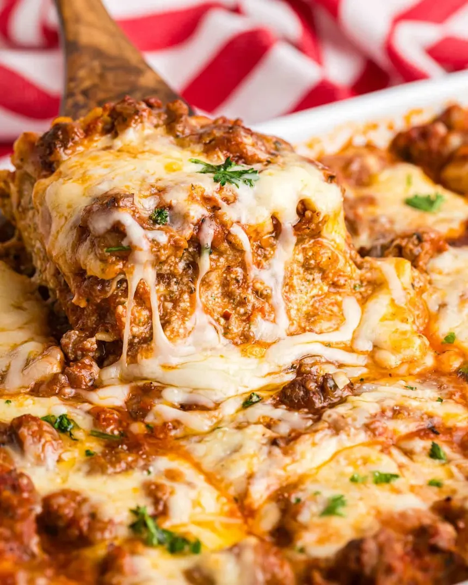

Lasagna Recipe

Description
Lasagna is made by layering pasta sheets with rich meat or vegetable sauce, creamy ricotta, and melted cheese. Bake until the layers are tender and the top turns golden and bubbly.
Ingredients
- Lasagna pasta sheets
- Ground beef or Italian sausage
- Onion and garlic
- Tomato sauce or marinara
- Ricotta cheese
- Mozzarella cheese
- Parmesan cheese
- Egg (to mix with ricotta)
- Olive oil
- Salt, pepper, and Italian seasoning
- Fresh basil (optional)
Steps
- Cook the pasta sheets until slightly tender and set aside.
- Sauté onion and garlic, then add ground meat and cook until browned.
- Stir in tomato sauce and seasonings; let it simmer.
- Mix ricotta with an egg and a bit of parmesan.
- Layer sauce, pasta, ricotta mixture, and mozzarella in a baking dish.
- Repeat layers and finish with mozzarella and parmesan on top.
- Bake until bubbly and golden, then let it rest before serving.
Home